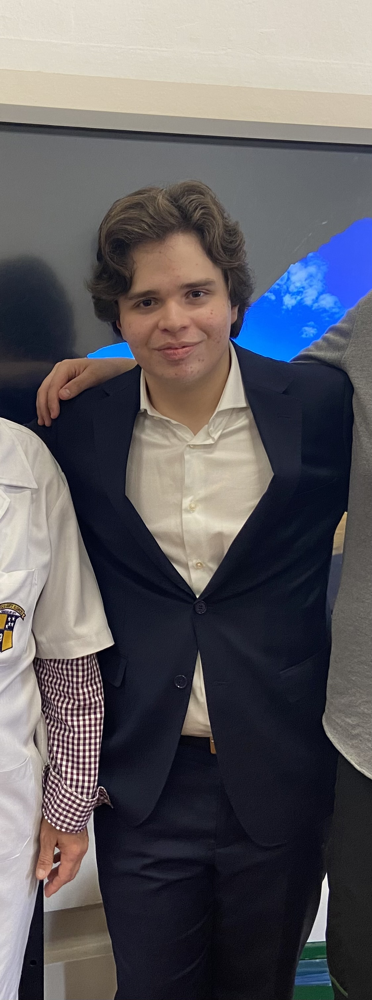
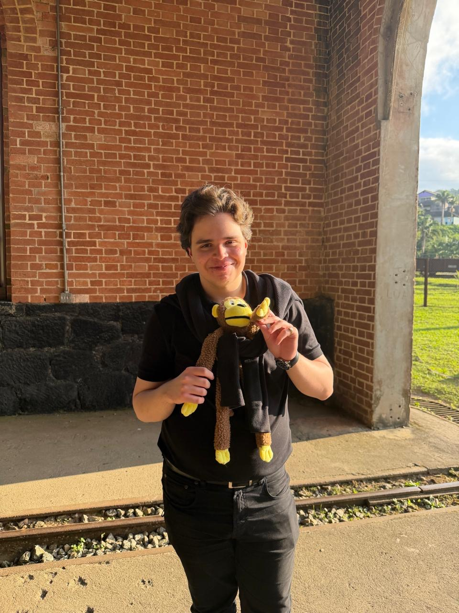
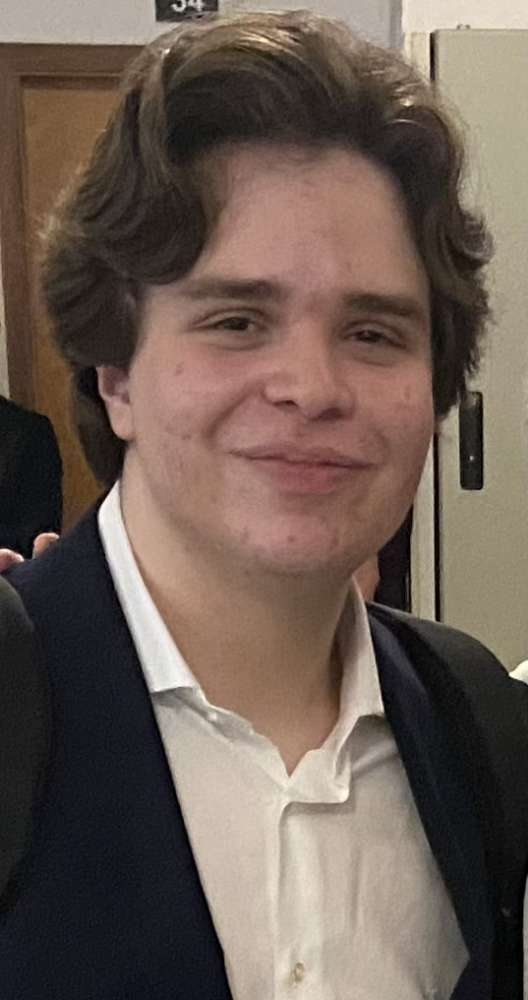

Imagens que interrogam o humano — com a frieza necessária para que a verdade apareça entre os planos.
2026
Um jovem em estado depressivo questiona suas escolhas de vida e se ela vale a pena. Uma pequena obra semi-autobiográfica sobre o peso de existir.
2026
Reinterpretação visual da música de Marisa Monte. Uma meditação sobre o tempo e a memória.
2026
Exposição crítica do Soft Power estadunidense nas Américas.

Formado em 2025 pelo Colégio Dante Alighieri, aprovado em Cinema tanto na ESPM quanto na FAAP. Acredita no cinema como instrumento filosófico — um meio capaz de expor quem realmente somos e nosso mundo, sem medo de olhar para o abismo e o pior de nós, para devolver ao espectador perguntas que ele não sabe responder, que nem somos capazes de responder, mas que não devemos ignorar, pois são questões fundamentais da condição humana.
Interessa-se profundamente por filosofia, psicologia, sociologia e história, além de outras artes: a literatura, a pintura e a música.
Vamos conversar
Projetos, colaborações, conversas sobre cinema, filosofia ou qualquer coisa que valha a pena dizer.
gabrielnbruschi@gmail.com Enviar mensagem